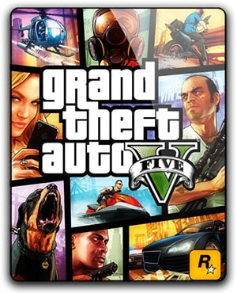
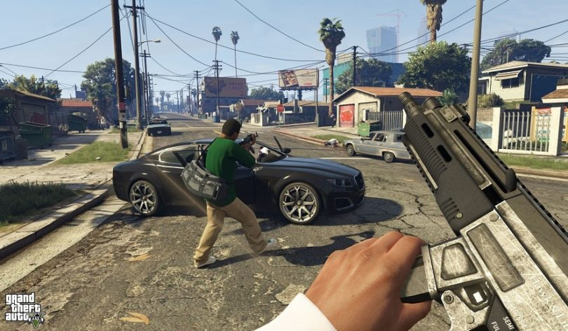

Grand Theft Auto V is a 2013 action-adventure game developed by Rockstar North and published by Rockstar Games. It is the first main entry in the Grand Theft Auto series since 2008's Grand Theft Auto IV. Set within the fictional state of San Andreas, based on Southern California, the single-player story follows three protagonists—retired bank robber Michael De Santa, street gangster Franklin Clinton, and drug dealer and arms smuggler Trevor Philips—and their efforts to commit heists while under pressure from a corrupt government agency and powerful crime figures. The open world design lets players freely roam San Andreas' open countryside and the fictional city of Los Santos, based on Los Angeles. |
 |
|---|---|
|  | Grand Theft Auto V is an action-adventure game played from either a third-person or first-person perspective. Players complete missions—linear scenarios with set objectives—to progress through the story. Outside of the missions, players may freely roam the open world. Composed of the San Andreas open countryside area, including the fictional Blaine County, and the fictional city of Los Santos, the world is much larger in area than earlier entries in the series. It may be fully explored after the game's beginning without restriction, although story progress unlocks more gameplay content. |
Rockstar North began to develop Grand Theft Auto V in 2008, following Grand Theft Auto IV's release. Development was conducted by a team of more than 1,000 people, including Rockstar North's core team and staff from parent company Rockstar Games' studios around the world. The proprietary Rockstar Advanced Game Engine (RAGE) was overhauled for the game to improve its draw distance rendering capabilities. The Euphoria and Bullet software handle additional animation and rendering tasks. Having become familiar with the PlayStation 3 and Xbox 360 hardware over time, Rockstar found they were able to push the consoles' graphical capabilities further than in previous games. Analyst estimations place the game's combined development and marketing budget at more than GB£170 million (US$265 million), which would make it the most expensive game ever made at that time.